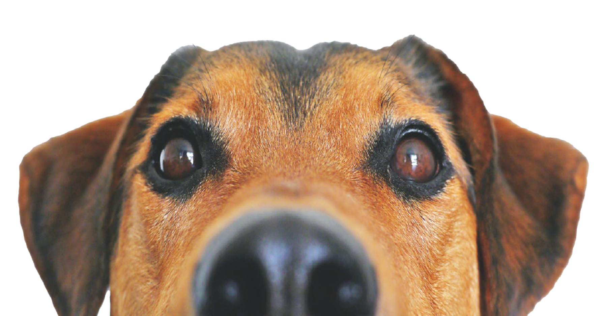

At Loveable Adoptable Pet Center,
You will have an opportunity to meet and visit with your potential new companion in person. Spend time interacting with your potential new friend. You can review spcially developed behavior and health profiles, and lifestyle considerations on each of our adoptave animals. We have adoption counselors who will work with you to help find that perfect pet, but bear in mind that this may oftern require more than one visit. They canhelp you decide what size, age, breed and temperament will most successfully meet your expectations.
Change a Life, Yours & Theirs,
Because adoption an animal is a family decision, please bring your whole family, including current resident dogs (if you are adopting a dog), to meet your potential companiion. Please leave your resident cats safely at home. The entire adoption process can be time consuming (up to 2 hours). You will be asked to complete an adoption survey. This time is well invested when you conside that your pet will live with you for up to 15 years or more. We ask for your patience and cooperation in the joyful process of bringing pets and people together.
Adoption
Recuse
Services
Volunteers